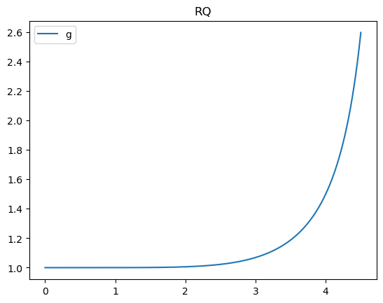

In this demo, we visualize the variance adjustment map curve, ξ, looks like. You can use this type of visualization to choose the tuning parameters L, x0, and y0 for the adjustment map.
Setup
Install dependencies
import Pkg
let
pkgs = ["LazyGPR", "PythonPlot", "VisualizationBag", "Images", "SpatialGSP"]
for pkg in pkgs
if Base.find_package(pkg) === nothing
Pkg.add(pkg)
end
end
end;
using LinearAlgebra
import Random
Random.seed!(25)
import LazyGPR as LGP
import PythonPlot as PLT
PLT.close("all")
fig_num = 1
const T = Float64;User Inputs
b_x = convert(T, 5) # the neighborhood radius.
M = floor(Int, b_x)5The exponent L must be an even positive integer. The larger the flatter.
L = M # We made an arbitrary choice here, as this is a tuning parameter. Feel free to try another positive even integer.
if isodd(L)
L = L + 1
end6We specify a point that the curve must pass through. This point is a tuning parameter; feel free to try another point.
x0, y0 = convert(T, 0.8*M), 1 + convert(T, 0.5)(4.0, 1.5)Visualize Adjustment Map
Construct the adjustment map container.
s = LGP.AdjustmentMap(x0, y0, b_x, L)
@assert s.a > 0 # try a different (x0, y0) if s.a is negative or too small.Specify the plotting area.
viz_bound = 0.9 # this is a number between 0 and 1 that controls the plot's domain. closer to 1 means the plot will tend closer to infinity near the upper boundary of the plot.
u_range = LinRange(0, viz_bound*M, 1000)1000-element LinRange{Float64, Int64}:
0.0, 0.0045045, 0.00900901, 0.0135135, …, 4.48649, 4.49099, 4.4955, 4.5Setup the ξ curve.
ξ = uu->LGP.evalsmap(uu, s)
@assert abs(ξ(x0)-y0) < eps(T)*100 # see if g passes through the point (x0,y0).Plot.
PLT.figure(fig_num)
fig_num += 1
PLT.plot(u_range, ξ.(u_range), label = "g")
PLT.legend()
PLT.title("RQ")
PLT.gcf()
This page was generated using Literate.jl.